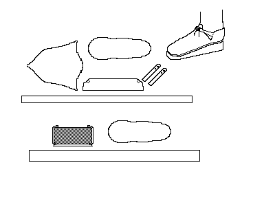

Elizabethan Front-Laced Ladies Shoe
A front-tied shoe, based on a pair described in Arnold Arnold.
They are welted shoes with cork soles. The cork being held in a thick leather sole. The shoes are tied by simple laces, drawn though the holes in the latchets and tied.
Return to
[Index]
Footwear of the Middle Ages - Historical Shoe Designs/Number 63, by I. Marc Carlson. Copyright 1996
This page is given for the free exchange of information, provided the Author's Name is included in all future revisions, and no money change hands, other than as expressed in the Copyright Page.